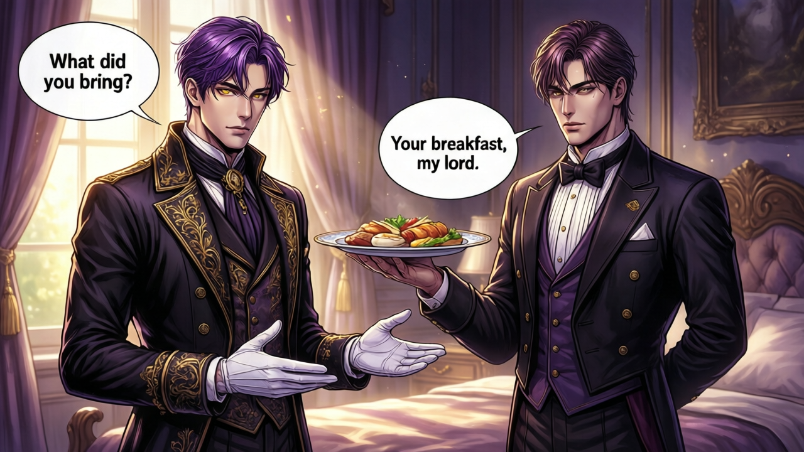

Qwen-Image-2512 smoke test
Four original 1280 × 720 RunPod PNGs from the Secure A100 80 GB smoke test. HiDream Full yielded no image in this historical run. The newer budget test lives in the current comparison.
Run receipts and quality checks


